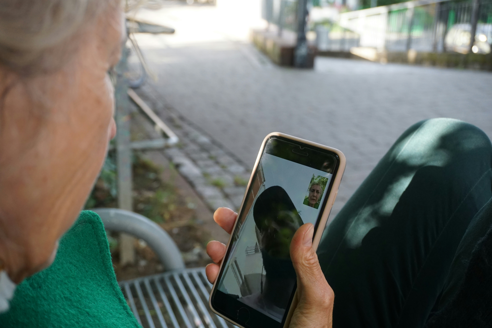

Osobisty kierowca
Profesjonalna i dyskretna obsługa klientów prywatnych oraz firm. Komfortowe przejazdy, pełna punktualność i bezpieczeństwo.
Posiadam prawo jazdy kat. B od 2008 roku. Jeżdżę spokojnie, bezpiecznie i zgodnie z przepisami. Zlecenie wykonuję samochodem klienta.
Działam na terenie całego kraju (Polski).Przy jednorazowych zleceniach pamiętaj, że dojeżdzam we wskazane przez Ciebie miejsce z Żyrardowa za pomocą transportu publicznego takiego jak: pociąg, tramwaj, metro, autobus.
Przy stałym zleceniu, bym był pod "ręką" możliwa jest moja relokacja do dowolnej lokalizacji na terenie Polski.
Posiadam aktualne zaświadczenie o niekaralności. Jestem bez nałogów.
Pomogę Ci:
- jako prywatny kierowca – mogę być do Twojej dyspozycji na stałe lub jednorazowo jako np.: kierowca na codzień.
- przy obsłudze imprez – bezpieczny powrót do domu z wesel, bankietów i spotkań jako Twój osobisty kierowca lub kierowca Twoich gości.
- przy transferach – szybko i sprawnie dowiozę Cię na lotnisko i dworzec. Auto odstawię we wskazane przez Ciebie miejsce. Klucze do auta przekaże odpowiedniej osobie, do tego przez Ciebie wyznaczonej.
- podczas tras krajowych – komfortowe przejazdy służbowe oraz prywatne po całej Polsce.
- w logistyce auta – odprowadzanie samochodu na przeglądy, do mechanika lub myjni, ew. mycie bezdotykowe na przeznaczonej do tego stacji wraz z ogólnym czyszczeniem wnętrza.
- w codziennych sprawach – realizacja Twoich zakupów i sprawunków w czasie, gdy pracujesz lub nie masz na to czasu, a jest potrzba by cos zrobić, załatwić.
W dzień: od 60 zł/h,
W dzień - weekend / imprezy: od 100 zł/h
W dzień - dłuższe trasy: wycena indywidualna
Zaliczka na przejazd: zależnie od Twojej lokazlizacji

Pogotowie komputerowe i techniczne
Z zaangażowaniem i dyskrecją podeję do Twojego sprzętu tak by znów działał jak "nowy". W zależności od Twoich potrzeb pomogę Ci zdalnie (TeamViewer/telefon), na miejscu u Ciebie, na miejscu u mnie np.: prześlesz dany sprzęt do mnie, a ja nim się zajmę.
Jasne zasady: Przed pracą zawsze wspólnie ustalamy zakres działań i koszty.
Mam wieloletnie doświdczenie w składaniu komputerów, naprawianiu jak i czyszczeniu z zewnatrz np.: z kurzu, pyłów itp. jak i naprawach w systemówych takich jak np.: reinstalacja systemów głównie Windows, instalacja sterowników, instalacja urządzeń peryferyjnych
Naprawy telefonów wykonywałem głównie na własne potrzeby, była to wymiana określonych komponeneów telefonu.
Wykonam dla Ciebie:
- instalację i konfigurację – Przeprowadzę przywrócenie do ustawień fabrycznych lub reinstalację systemu, zainstaluję lub uaktualnię sterowniki systemowe lub programy oraz podłącze drukarki do komputera np.: przez Wi-Fi, itp.
- pzręgląd i modernizację – mogę złożyć dla Ciebie komputer całkowicie od zera, wymienić dyski na nowe, szybsze (z HDD na SSD), wymienić, dokołożyć pamięci RAM oraz np.: wymienić zbity ekran, itp.
- przyspieszenie sprzętu – przeprowadzę czyszczenie systemowe, usuwanie wirusów oraz np.: fizyczną konserwację wnętrza laptopów, itp.
Przy pomocy zdalnej: od 80 zł/h
Przy pomocy na miejscu: wycena indywidualna
Zaliczka na przejazd: zależnie od Twojej lokazlizacji

Tworzenie stron internetowych
Stworzę, napiszę dla Ciebie Twoją profesionalnie wyglądającą stronę, wizytówkę. Przeprowadzę pełną jej konfigurację: umieszczę na Twoim serwerze, podepnę pod nią Twój adres internetowy, a cały kod źródłowy będzie całkowicie, dożywotnio Twój.
Zajmuję się Tworzeniem stron internetowych w językach HTML, CSS, Javascript. Są one wystarczające do prezentacji Twojej działalności w sieci, a kod, który ode mnie otrzymasz będzie Twój na zawsze. Nie korzystam z gotowych szablonów, a ostateczny wygląd strony zależy od Twojej, Naszej wyobraźni. Strony stworzone za pomocą tych jezyków nie potrzebują, żadnych specjalistycznych drogich serwerów, by działały latami w pełni sprawnie. Zależnie od Twoich potrzeb pokaże Ci jak i gdzie (na jakim serwerze) umieścić Twoją stronę, by działała w pełni np.: za darmo.
Stworzę dla Ciebie:
- Twoją osobistą lub firmową stronę wizytówkową – będzie nowoczesna, responsywna (automatycznie dopasowująca się do telefonów i tabletów) i unikalna strona WWW dopasowana do Twojej działalności. Kod napiszę całkowicie od zera prosty i czysty kod (HTML, CSS, JavaScript) bez ciężkich szablonów, co gwarantuje błyskawiczne działanie, stabilność i bezpieczeństwo. Indywidualne podejdę do twojego zlecenia – brak gotowych, powtarzalnych wzorów, projekt będzie w pełni dostosowany do Twoich potrzeb i branży.
Elastyczna wycena – brak ukrytych opłat, koszt każdego projektu ustalam indywidualnie przed rozpoczęciem prac informując o wszystkich kosztach, które będzie trzeba ponieść np.: związanych z ewentualnym zakupem domeny, hostingu (serwera), itp.

Wsparcie seniorów
Profesionalnie i dyskretnie w zależności od potrzeb pomogę osobom starszym w ich codziennych sprawunkach.
Podczas nauki robimy wspólnie notatki tak, byś mogła, mógł, wracać do nich w kazdej chwili gdy "coś" bedzie potrzebne.
Mam doświadczenie w pomocy seniorom w zakresie:
- rozmowy - zwykłej prostej rozmowy o wszystkim np.: o Twoim hobby, codzienności, trudnych tematach. Wszystko co mi powiesz zachowam w pełnej tajemnicy przed resztą "Świata" :)
- edukacji – mogę nauczyć ogólnej obsługi komputera i telefonu lub tylko w wybranym zakresie.
- nauczenia obsługi aplikacji - np.: do wystawiania zbędnych rzeczy na sprzedaż oraz nauczenia jak i skąd je wysyłać.
- bycia zastępczym kierocą – pomogę w transporcie i codziennych obowiązkach.
- bycia osobistym kierocą – regularnie mogę wspomóc w wyjazdach na dalsze odległości
- wyrzucania na śmietnik zbędnych rzeczy - ogólnej pomocy przy sprzątaniu np.: wielkich gabarytów, "odgruzowaniu" mieszkania, itp.
Jeśli jest coś w czym potrzebujesz pomocy, śmiało pisz - sprawdźmy czy jestem wstanie podjąć się tego zagadnienia.
W dzień: od 40 zł/h,
Weekend / imprezy: od 60 zł/h
Dłuższa współpraca: wycena indywidualna
Zaliczka na przejazd: zależnie od Twojej lokazlizacji
Osobisty kierowca
Zostanę Twoim osobistym kierowcą, który z odpowiedzialnością i dyskrecją zapewni Ci bezpieczą i komfortową podróż do dowolnego, wybranego przez Ciebie miejsca na terenie Polski tam i jeśli chcesz również z powrotem.
Posiadam prawo jazdy kat. B od 2008 roku. Jeżdżę spokojnie, bezpiecznie i zgodnie z przepisami. Zlecenie wykonuję samochodem klienta.
Działam na terenie całego kraju (Polski).Przy jednorazowych zleceniach pamiętaj, że dojeżdzam we wskazane przez Ciebie miejsce z Żyrardowa za pomocą transportu publicznego takiego jak: pociąg, tramwaj, metro, autobus.
Przy stałym zleceniu, bym był pod "ręką" możliwa jest moja relokacja do dowolnej lokalizacji na terenie Polski.
Posiadam aktualne zaświadczenie o niekaralności. Jestem bez nałogów.
Pomogę Ci:
- jako prywatny kierowca – mogę być do Twojej dyspozycji na stałe lub jednorazowo jako np.: kierowca na codzień.
- przy obsłudze imprez – bezpieczny powrót do domu z wesel, bankietów i spotkań jako Twój osobisty kierowca lub kierowca Twoich gości.
- przy transferach – szybko i sprawnie dowiozę Cię na lotnisko i dworzec. Auto odstawię we wskazane przez Ciebie miejsce. Klucze do auta przekaże odpowiedniej osobie, do tego przez Ciebie wyznaczonej.
- podczas tras krajowych – komfortowe przejazdy służbowe oraz prywatne po całej Polsce.
- w logistyce auta – odprowadzanie samochodu na przeglądy, do mechanika lub myjni, ew. mycie bezdotykowe na przeznaczonej do tego stacji wraz z ogólnym czyszczeniem wnętrza.
- w codziennych sprawach – realizacja Twoich zakupów i sprawunków w czasie, gdy pracujesz lub nie masz na to czasu, a jest potrzba by cos zrobić, załatwić.
W nocy: od 100 zł/h,
W nocy - weekend / imprezy: od 150 zł/h
W nocy - dłuższe trasy: wycena indywidualna
Zaliczka na przejazd: zależnie od Twojej lokazlizacji